Code
library(mice)
library(naniar)
library(VIM)
library(sandwich)
library(lmtest)
library(ggplot2)
library(knitr)
library(kableExtra)April 13, 2026
library(mice)
library(naniar)
library(VIM)
library(sandwich)
library(lmtest)
library(ggplot2)
library(knitr)
library(kableExtra)These notes supplement the primary lecture notes on missing data (Set13.pdf), which cover the conceptual foundations of missing data mechanisms (MCAR, MAR, MNAR), the limitations of ad hoc methods, inverse probability weighting, and multiple imputation. The purpose of these supplementary notes is to:
mice package, including diagnostics and convergence assessmentHmisc/rms approach to multiple imputationtreatment: Randomized treatment assignment (0 = placebo, 1 = active)age: Age in years (continuous)sex: Sex (0 = male, 1 = female)bmi: Body mass index at baseline (continuous)sbp_base: Systolic blood pressure at baseline (continuous)sbp_6mo: Systolic blood pressure at 6 months (continuous, the primary outcome)side_effects: Whether the subject reported side effects (binary)sbp_6mo and bmi with different mechanisms:
sbp_6mo is more likely to be missing when subjects have higher baseline SBP and are on active treatment (simulating dropout due to side effects or perceived lack of efficacy). This is MARbmi is missing completely at random in a small fraction of subjects. This is MCARset.seed(2024)
n <- 500
## Generate complete data
treatment <- rbinom(n, 1, 0.5)
age <- round(rnorm(n, mean = 55, sd = 10), 1)
sex <- rbinom(n, 1, 0.45)
bmi <- round(rnorm(n, mean = 28, sd = 5), 1)
sbp_base <- round(rnorm(n, mean = 145, sd = 15), 0)
side_effects <- rbinom(n, 1, plogis(-2 + 0.8 * treatment + 0.01 * sbp_base))
## True treatment effect: -8 mmHg reduction in SBP at 6 months
sbp_6mo <- round(sbp_base - 8 * treatment + 0.3 * (age - 55) +
0.4 * (bmi - 28) + rnorm(n, 0, 10), 0)
dat_complete <- data.frame(treatment, age, sex, bmi, sbp_base,
side_effects, sbp_6mo)
## Introduce MAR missingness in sbp_6mo
## Higher baseline SBP and active treatment increase probability of dropout
prob_miss_sbp <- plogis(-3 + 0.015 * sbp_base + 0.6 * treatment +
0.5 * side_effects)
miss_sbp <- rbinom(n, 1, prob_miss_sbp)
## Introduce MCAR missingness in bmi (10% completely at random)
miss_bmi <- rbinom(n, 1, 0.10)
## Create the analysis dataset with missing values
dat <- dat_complete
dat$sbp_6mo[miss_sbp == 1] <- NA
dat$bmi[miss_bmi == 1] <- NA
summary(dat) treatment age sex bmi sbp_base
Min. :0.000 Min. :29.20 Min. :0.000 Min. :15.7 Min. :101.0
1st Qu.:0.000 1st Qu.:48.50 1st Qu.:0.000 1st Qu.:24.9 1st Qu.:135.0
Median :1.000 Median :54.50 Median :0.000 Median :27.7 Median :146.0
Mean :0.516 Mean :54.99 Mean :0.454 Mean :28.1 Mean :145.2
3rd Qu.:1.000 3rd Qu.:62.02 3rd Qu.:1.000 3rd Qu.:31.2 3rd Qu.:155.2
Max. :1.000 Max. :84.30 Max. :1.000 Max. :40.7 Max. :186.0
NA's :47
side_effects sbp_6mo
Min. :0.000 Min. : 89.0
1st Qu.:0.000 1st Qu.:131.0
Median :0.000 Median :140.5
Mean :0.488 Mean :141.8
3rd Qu.:1.000 3rd Qu.:154.0
Max. :1.000 Max. :190.0
NA's :228 dat_complete so we can compare methods against the “truth” laterdat_complete. This is the advantage of a simulation exercise## Missingness rates
colMeans(is.na(dat)) |> round(3) treatment age sex bmi sbp_base side_effects
0.000 0.000 0.000 0.094 0.000 0.000
sbp_6mo
0.456 md.pattern(dat, rotate.names = TRUE)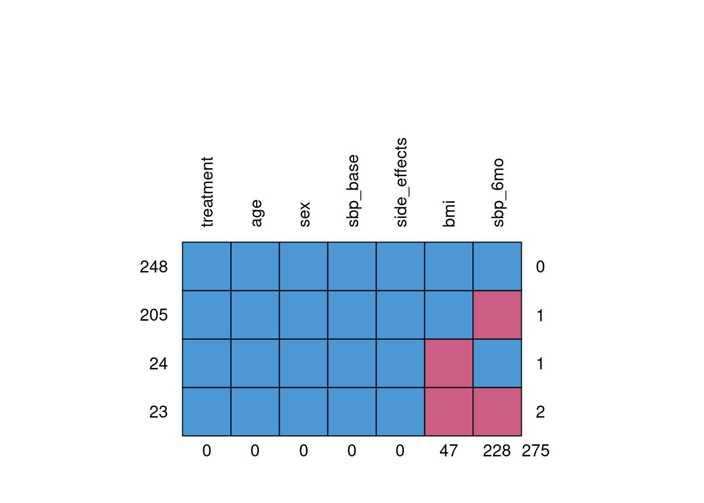
treatment age sex sbp_base side_effects bmi sbp_6mo
248 1 1 1 1 1 1 1 0
205 1 1 1 1 1 1 0 1
24 1 1 1 1 1 0 1 1
23 1 1 1 1 1 0 0 2
0 0 0 0 0 47 228 275vis_miss() provides a heatmap of the full dataset, showing where missing values occurvis_miss(dat, sort_miss = TRUE)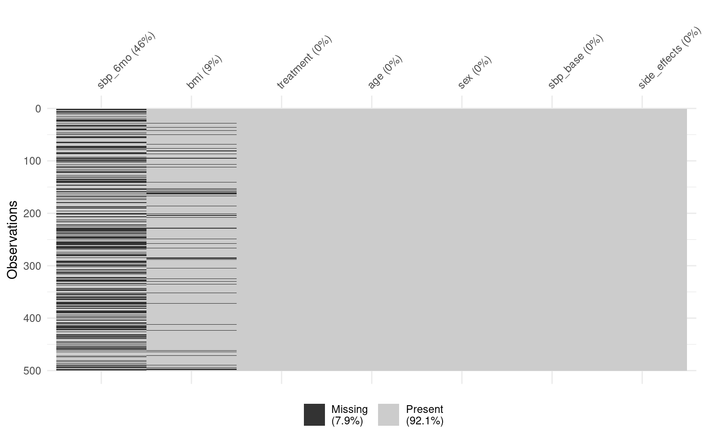
gg_miss_var() shows the number and percentage of missing values per variablegg_miss_var(dat, show_pct = TRUE)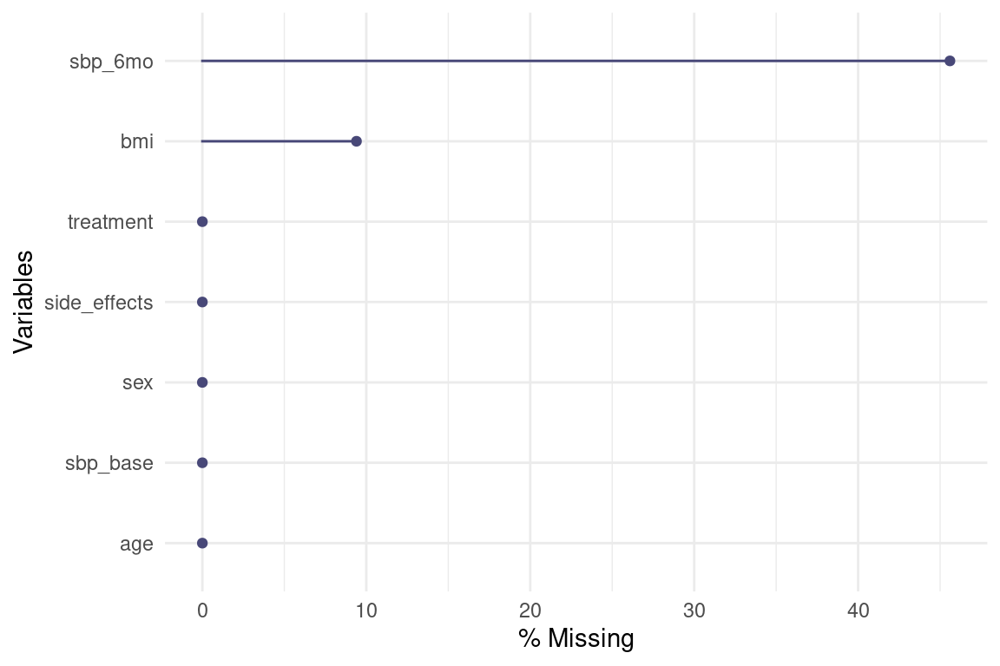
gg_miss_upset() displays the intersection of missingness across variables
gg_miss_upset(dat)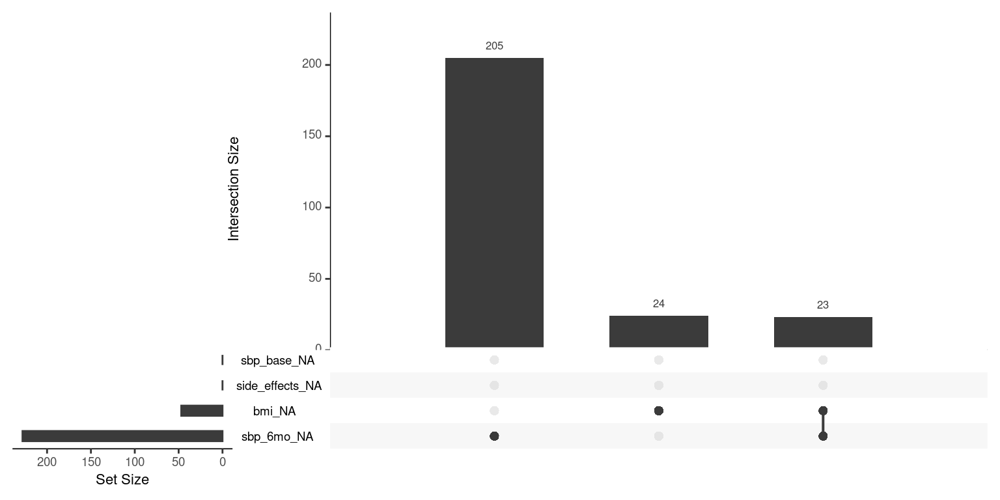
sbp_6mo differ systematically from those with observed sbp_6mo, the data are likely not MCARdat$miss_sbp <- factor(is.na(dat$sbp_6mo),
levels = c(FALSE, TRUE),
labels = c("Observed", "Missing"))
## Compare baseline characteristics
aggregate(cbind(age, sbp_base, side_effects) ~ miss_sbp + treatment,
data = dat, FUN = mean) |>
kable(digits = 2) |>
kable_styling(bootstrap_options = "striped", full_width = FALSE)| miss_sbp | treatment | age | sbp_base | side_effects |
|---|---|---|---|---|
| Observed | 0 | 55.59 | 144.07 | 0.34 |
| Missing | 0 | 56.29 | 147.32 | 0.46 |
| Observed | 1 | 54.41 | 144.47 | 0.49 |
| Missing | 1 | 54.05 | 145.74 | 0.66 |
mcar_test(dat[, c("age", "sex", "bmi", "sbp_base",
"treatment", "side_effects", "sbp_6mo")])# A tibble: 1 × 4
statistic df p.value missing.patterns
<dbl> <dbl> <dbl> <int>
1 51.9 17 0.0000215 4VIM::marginplot() provides a bivariate view of missingness
marginplot(dat[, c("sbp_base", "sbp_6mo")],
col = c("blue", "red", "orange"),
pch = 20)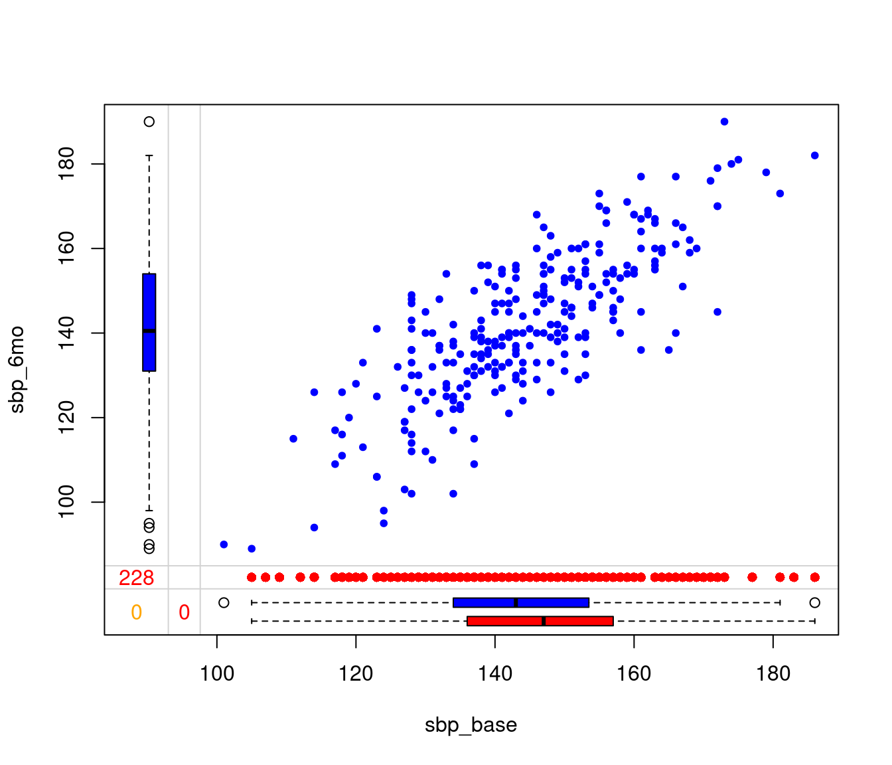
## Remove the missingness indicator (not needed for analysis)
dat$miss_sbp <- NULL## Analysis on the full (no missingness) data
fit_true <- lm(sbp_6mo ~ treatment + age + sex + bmi + sbp_base, data = dat_complete)
coef(summary(fit_true))["treatment", ] |> round(4) Estimate Std. Error t value Pr(>|t|)
-8.2757 0.8779 -9.4266 0.0000 fit_cc <- lm(sbp_6mo ~ treatment + age + sex + bmi + sbp_base, data = dat)
coef(summary(fit_cc))["treatment", ] |> round(4) Estimate Std. Error t value Pr(>|t|)
-8.5101 1.3115 -6.4890 0.0000 nobs(fit_cc)[1] 248dat_locf <- dat
dat_locf$sbp_6mo[is.na(dat_locf$sbp_6mo)] <-
dat_locf$sbp_base[is.na(dat_locf$sbp_6mo)]
fit_locf <- lm(sbp_6mo ~ treatment + age + sex + bmi + sbp_base, data = dat_locf)
coef(summary(fit_locf))["treatment", ] |> round(4) Estimate Std. Error t value Pr(>|t|)
-3.8665 0.7536 -5.1309 0.0000 sbp_6mo with the overall mean of the observed valuesdat_mean <- dat
dat_mean$sbp_6mo[is.na(dat_mean$sbp_6mo)] <- mean(dat$sbp_6mo, na.rm = TRUE)
fit_mean <- lm(sbp_6mo ~ treatment + age + sex + bmi + sbp_base, data = dat_mean)
coef(summary(fit_mean))["treatment", ] |> round(4) Estimate Std. Error t value Pr(>|t|)
-4.2115 1.0216 -4.1225 0.0000 results <- data.frame(
Method = c("Truth (complete data)", "Complete case",
"LOCF", "Mean imputation"),
Estimate = c(coef(fit_true)["treatment"],
coef(fit_cc)["treatment"],
coef(fit_locf)["treatment"],
coef(fit_mean)["treatment"]),
SE = c(coef(summary(fit_true))["treatment", "Std. Error"],
coef(summary(fit_cc))["treatment", "Std. Error"],
coef(summary(fit_locf))["treatment", "Std. Error"],
coef(summary(fit_mean))["treatment", "Std. Error"]),
N = c(nobs(fit_true), nobs(fit_cc), nobs(fit_locf), nobs(fit_mean))
)
results |>
kable(digits = 4, row.names = FALSE) |>
kable_styling(bootstrap_options = "striped", full_width = FALSE)| Method | Estimate | SE | N |
|---|---|---|---|
| Truth (complete data) | -8.2757 | 0.8779 | 500 |
| Complete case | -8.5101 | 1.3115 | 248 |
| LOCF | -3.8665 | 0.7536 | 453 |
| Mean imputation | -4.2115 | 1.0216 | 453 |
sbp_6mo## Missingness model: predict P(observed)
miss_model <- glm(is.na(sbp_6mo) ~ treatment + age + sex + sbp_base + side_effects,
data = dat, family = binomial)
summary(miss_model)
Call:
glm(formula = is.na(sbp_6mo) ~ treatment + age + sex + sbp_base +
side_effects, family = binomial, data = dat)
Coefficients:
Estimate Std. Error z value Pr(>|z|)
(Intercept) -2.817354 1.159375 -2.430 0.015096 *
treatment 0.838086 0.190305 4.404 1.06e-05 ***
age 0.003297 0.009805 0.336 0.736660
sex -0.035836 0.188261 -0.190 0.849033
sbp_base 0.011854 0.006411 1.849 0.064471 .
side_effects 0.629307 0.189746 3.317 0.000911 ***
---
Signif. codes: 0 '***' 0.001 '**' 0.01 '*' 0.05 '.' 0.1 ' ' 1
(Dispersion parameter for binomial family taken to be 1)
Null deviance: 689.27 on 499 degrees of freedom
Residual deviance: 649.27 on 494 degrees of freedom
AIC: 661.27
Number of Fisher Scoring iterations: 4## Predicted probability of being observed
p_obs <- 1 - predict(miss_model, type = "response")
## Inverse probability weights (only for observed subjects)
dat$ipw <- ifelse(!is.na(dat$sbp_6mo), 1 / p_obs, NA)
## Examine the distribution of weights
summary(dat$ipw[!is.na(dat$sbp_6mo)]) Min. 1st Qu. Median Mean 3rd Qu. Max.
1.279 1.417 1.710 1.837 2.044 3.391 ggplot(dat[!is.na(dat$sbp_6mo), ], aes(x = ipw)) +
geom_histogram(bins = 30, fill = "steelblue", color = "white") +
labs(x = "Inverse Probability Weight", y = "Count",
title = "Distribution of IPW Weights") +
theme_minimal(base_size = 14)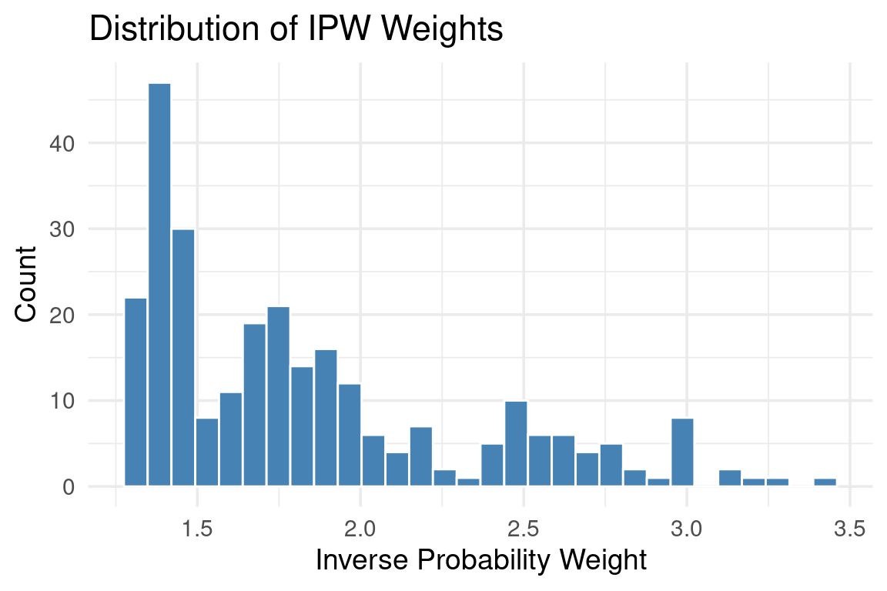
fit_ipw <- lm(sbp_6mo ~ treatment + age + sex + bmi + sbp_base,
data = dat, weights = ipw)
coef(summary(fit_ipw))["treatment", ] |> round(4) Estimate Std. Error t value Pr(>|t|)
-8.1456 1.3107 -6.2149 0.0000 lm() are not fully correct for IPW. They do not account for the estimation of the weightssandwich package## Robust (HC1) standard errors
ipw_robust <- coeftest(fit_ipw, vcov = vcovHC(fit_ipw, type = "HC1"))
ipw_robust["treatment", ] |> round(4) Estimate Std. Error t value Pr(>|t|)
-8.1456 1.3745 -5.9263 0.0000 set.seed(12345)
n_boot <- 1000
boot_ests <- numeric(n_boot)
for (b in seq_len(n_boot)) {
## Resample with replacement
idx <- sample(seq_len(nrow(dat)), replace = TRUE)
dat_b <- dat[idx, ]
## Re-estimate the missingness model
miss_b <- glm(is.na(sbp_6mo) ~ treatment + age + sex + sbp_base + side_effects,
data = dat_b, family = binomial)
p_obs_b <- 1 - predict(miss_b, type = "response")
## Compute weights (observed subjects only)
dat_b$ipw_b <- ifelse(!is.na(dat_b$sbp_6mo), 1 / p_obs_b, NA)
## Fit the weighted analysis model
fit_b <- lm(sbp_6mo ~ treatment + age + sex + bmi + sbp_base,
data = dat_b, weights = ipw_b)
boot_ests[b] <- coef(fit_b)["treatment"]
}
## Bootstrap SE is the standard deviation of the bootstrap estimates
se_boot <- sd(boot_ests)
se_boot |> round(4)[1] 1.3349data.frame(
SE_Method = c("Naive (model-based)", "Sandwich (HC1)", "Bootstrap"),
SE = c(coef(summary(fit_ipw))["treatment", "Std. Error"],
ipw_robust["treatment", "Std. Error"],
se_boot)
) |>
kable(digits = 4, row.names = FALSE) |>
kable_styling(bootstrap_options = "striped", full_width = FALSE)| SE_Method | SE |
|---|---|
| Naive (model-based) | 1.3107 |
| Sandwich (HC1) | 1.3745 |
| Bootstrap | 1.3349 |
## Remove the IPW column (not needed for subsequent analyses)
dat$ipw <- NULLmicemice()imp <- mice(dat, m = 20, maxit = 10, seed = 12345, print = FALSE)
impClass: mids
Number of multiple imputations: 20
Imputation methods:
treatment age sex bmi sbp_base side_effects
"" "" "" "pmm" "" ""
sbp_6mo
"pmm"
PredictorMatrix:
treatment age sex bmi sbp_base side_effects sbp_6mo
treatment 0 1 1 1 1 1 1
age 1 0 1 1 1 1 1
sex 1 1 0 1 1 1 1
bmi 1 1 1 0 1 1 1
sbp_base 1 1 1 1 0 1 1
side_effects 1 1 1 1 1 0 1m = 20: Create 20 imputed datasets
maxit = 10: Run 10 iterations per imputationprint = FALSE: Suppress iteration-by-iteration outputmethod vector specifies the imputation model for each variablemice chooses defaults based on variable type:
"pmm" (predictive mean matching)"logreg" (logistic regression)"polyreg" (polytomous logistic regression)"polr" (proportional odds model)"" (empty string). They are not imputed but are used as predictorsimp$method treatment age sex bmi sbp_base side_effects
"" "" "" "pmm" "" ""
sbp_6mo
"pmm" "norm")## Example: switch bmi to Bayesian linear regression
meth <- imp$method
meth["bmi"] <- "norm"
meth treatment age sex bmi sbp_base side_effects
"" "" "" "norm" "" ""
sbp_6mo
"pmm" imp$predictorMatrix treatment age sex bmi sbp_base side_effects sbp_6mo
treatment 0 1 1 1 1 1 1
age 1 0 1 1 1 1 1
sex 1 1 0 1 1 1 1
bmi 1 1 1 0 1 1 1
sbp_base 1 1 1 1 0 1 1
side_effects 1 1 1 1 1 0 1
sbp_6mo 1 1 1 1 1 1 0side_effects from the imputation model for bmi):pred <- imp$predictorMatrix
pred["bmi", "side_effects"] <- 0
pred treatment age sex bmi sbp_base side_effects sbp_6mo
treatment 0 1 1 1 1 1 1
age 1 0 1 1 1 1 1
sex 1 1 0 1 1 1 1
bmi 1 1 1 0 1 0 1
sbp_base 1 1 1 1 0 1 1
side_effects 1 1 1 1 1 0 1
sbp_6mo 1 1 1 1 1 1 0sbp_6mo) should be included as a predictor in the imputation model for covariates like bmi, even though sbp_6mo is not missing in those observations
densityplot() overlays the density of observed values (blue) against the imputed values (red, one line per imputation)densityplot(imp, ~ sbp_6mo + bmi)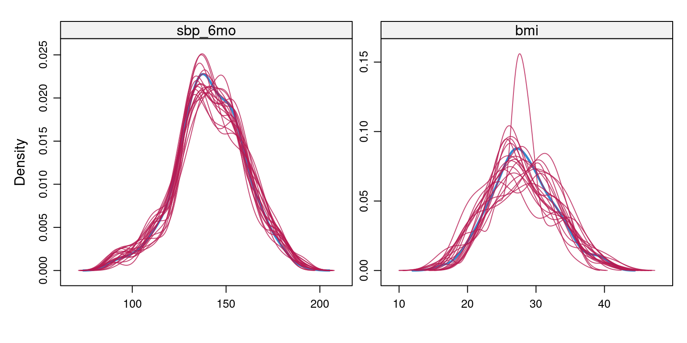
stripplot() shows individual imputed values alongside observed values
stripplot(imp, sbp_6mo + bmi ~ .imp, pch = 20, cex = 0.8)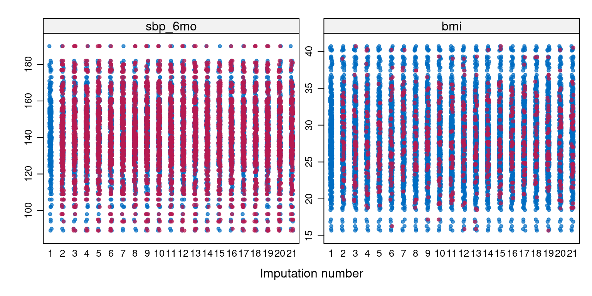
xyplot() shows bivariate relationships, with observed and imputed values distinguished by colorxyplot(imp, sbp_6mo ~ sbp_base | .imp, pch = 20, cex = 0.6)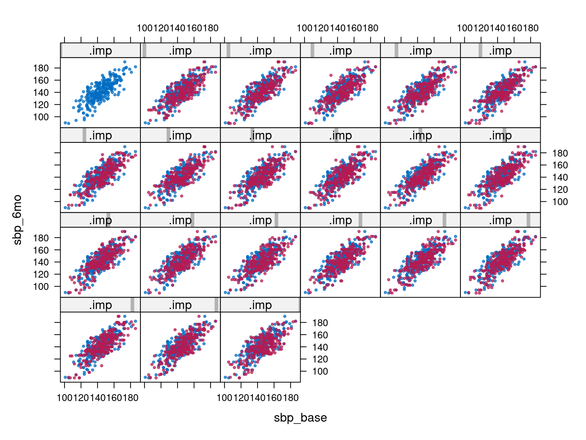
plot() applied to a mids object produces trace plots of the mean and standard deviation of imputed values across iterations, with one line per chain (imputation)plot(imp)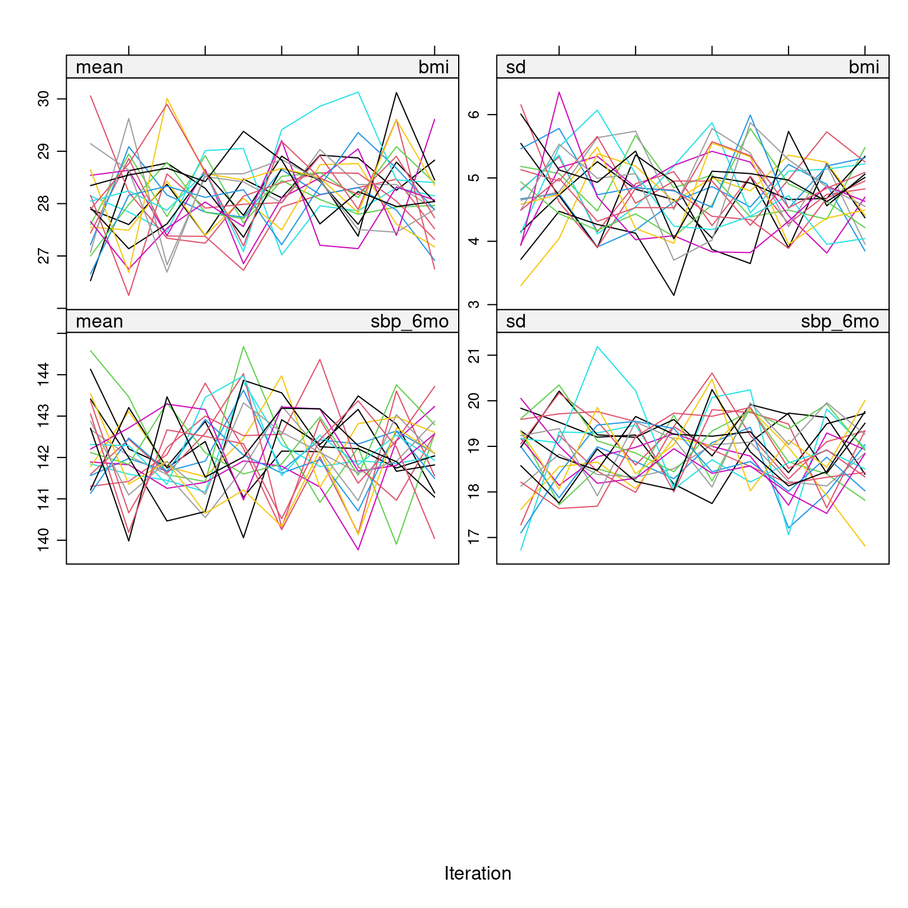
maxit and re-examine## Run with more iterations to illustrate
imp_long <- mice(dat, m = 20, maxit = 50, seed = 12345, print = FALSE)
plot(imp_long)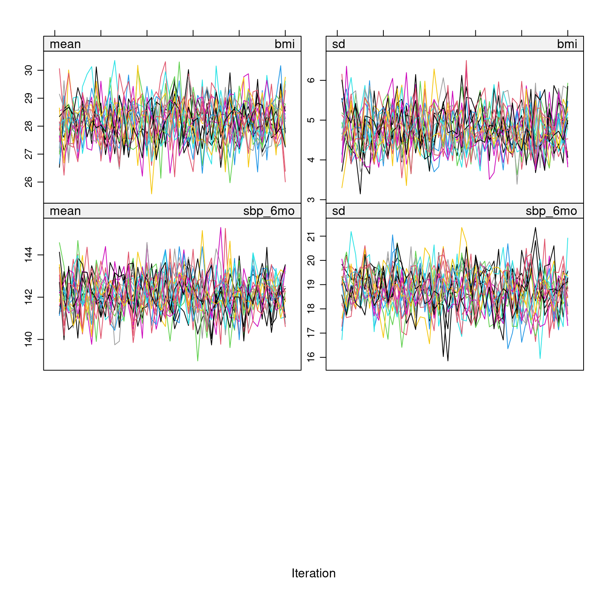
with()pool(), which applies Rubin’s rulessummary()## Step 1: Fit the model to each imputed dataset
fit_mi <- with(imp, lm(sbp_6mo ~ treatment + age + sex + bmi + sbp_base))
## Step 2: Pool using Rubin's rules
pooled <- pool(fit_mi)
## Step 3: Summarize
summary(pooled, conf.int = TRUE) |>
kable(digits = 4) |>
kable_styling(bootstrap_options = "striped", full_width = FALSE)| term | estimate | std.error | statistic | df | p.value | 2.5 % | 97.5 % | conf.low | conf.high |
|---|---|---|---|---|---|---|---|---|---|
| (Intercept) | -12.4287 | 8.1976 | -1.5161 | 69.3795 | 0.1340 | -28.7809 | 3.9235 | -28.7809 | 3.9235 |
| treatment | -7.9289 | 1.2574 | -6.3058 | 59.4490 | 0.0000 | -10.4445 | -5.4132 | -10.4445 | -5.4132 |
| age | 0.2184 | 0.0686 | 3.1830 | 50.7909 | 0.0025 | 0.0806 | 0.3561 | 0.0806 | 0.3561 |
| sex | -0.3210 | 1.2112 | -0.2650 | 68.4375 | 0.7918 | -2.7377 | 2.0957 | -2.7377 | 2.0957 |
| bmi | -0.0022 | 0.1177 | -0.0191 | 100.7539 | 0.9848 | -0.2358 | 0.2313 | -0.2358 | 0.2313 |
| sbp_base | 1.0100 | 0.0427 | 23.6645 | 59.1298 | 0.0000 | 0.9246 | 1.0954 | 0.9246 | 1.0954 |
pooledClass: mipo m = 20
term m estimate ubar b t dfcom
1 (Intercept) 20 -12.428712339 3.688569e+01 2.887140e+01 67.200657696 494
2 treatment 20 -7.928851280 8.010450e-01 7.428394e-01 1.581026301 494
3 age 20 0.218388373 2.170879e-03 2.415727e-03 0.004707393 494
4 sex 20 -0.320986056 7.999149e-01 6.353859e-01 1.467070109 494
5 bmi 20 -0.002247722 8.892001e-03 4.729032e-03 0.013857484 494
6 sbp_base 20 1.010027601 9.202168e-04 8.585399e-04 0.001821684 494
df riv lambda fmi
1 69.37950 0.8218627 0.4511112 0.4662782
2 59.44904 0.9737048 0.4933386 0.5095650
3 50.79094 1.1684271 0.5388362 0.5559828
4 68.43753 0.8340328 0.4547535 0.4700185
5 100.75392 0.5584213 0.3583250 0.3706942
6 59.12976 0.9796244 0.4948537 0.5111147results_all <- data.frame(
Method = c("Truth (complete data)", "Complete case*",
"LOCF*", "Mean imputation*",
"IPW (naive SE)", "IPW (sandwich SE)", "IPW (bootstrap SE)",
"Multiple imputation"),
Estimate = c(coef(fit_true)["treatment"],
coef(fit_cc)["treatment"],
coef(fit_locf)["treatment"],
coef(fit_mean)["treatment"],
coef(fit_ipw)["treatment"],
coef(fit_ipw)["treatment"],
coef(fit_ipw)["treatment"],
summary(pooled)$estimate[
summary(pooled)$term == "treatment"]),
SE = c(coef(summary(fit_true))["treatment", "Std. Error"],
coef(summary(fit_cc))["treatment", "Std. Error"],
coef(summary(fit_locf))["treatment", "Std. Error"],
coef(summary(fit_mean))["treatment", "Std. Error"],
coef(summary(fit_ipw))["treatment", "Std. Error"],
ipw_robust["treatment", "Std. Error"],
se_boot,
summary(pooled)$std.error[
summary(pooled)$term == "treatment"])
)
results_all |>
kable(digits = 4, row.names = FALSE,
caption = "* denotes ad hoc method") |>
kable_styling(bootstrap_options = "striped", full_width = FALSE)| Method | Estimate | SE |
|---|---|---|
| Truth (complete data) | -8.2757 | 0.8779 |
| Complete case* | -8.5101 | 1.3115 |
| LOCF* | -3.8665 | 0.7536 |
| Mean imputation* | -4.2115 | 1.0216 |
| IPW (naive SE) | -8.1456 | 1.3107 |
| IPW (sandwich SE) | -8.1456 | 1.3745 |
| IPW (bootstrap SE) | -8.1456 | 1.3349 |
| Multiple imputation | -7.9289 | 1.2574 |
Hmisc/rms ApproachHmisc package provides aregImpute(), an alternative imputation engine
rms package provides fit.mult.impute(), which fits an rms model (e.g., ols, lrm, cph) to the multiply imputed data and pools the results using Rubin’s ruleslibrary(Hmisc)
library(rms)
set.seed(12345)
areg_imp <- aregImpute(~ treatment + age + sex + bmi + sbp_base +
side_effects + sbp_6mo,
data = dat,
n.impute = 20,
nk = 3)Iteration 1
Iteration 2
Iteration 3
Iteration 4
Iteration 5
Iteration 6
Iteration 7
Iteration 8
Iteration 9
Iteration 10
Iteration 11
Iteration 12
Iteration 13
Iteration 14
Iteration 15
Iteration 16
Iteration 17
Iteration 18
Iteration 19
Iteration 20
Iteration 21
Iteration 22
Iteration 23 areg_imp
Multiple Imputation using Bootstrap and PMM
aregImpute(formula = ~treatment + age + sex + bmi + sbp_base +
side_effects + sbp_6mo, data = dat, n.impute = 20, nk = 3)
n: 500 p: 7 Imputations: 20 nk: 3
Number of NAs:
treatment age sex bmi sbp_base side_effects
0 0 0 47 0 0
sbp_6mo
228
type d.f.
treatment l 1
age s 2
sex l 1
bmi s 2
sbp_base s 2
side_effects l 1
sbp_6mo s 1
Transformation of Target Variables Forced to be Linear
R-squares for Predicting Non-Missing Values for Each Variable
Using Last Imputations of Predictors
bmi sbp_6mo
0.055 0.723 dd <- datadist(dat)
options(datadist = "dd")
fit_areg <- fit.mult.impute(sbp_6mo ~ treatment + age + sex + bmi + sbp_base,
fitter = ols,
xtrans = areg_imp,
data = dat)
Wald Statistic Information
Variance Inflation Factors Due to Imputation:
Intercept treatment age sex bmi sbp_base
1.67 2.17 1.20 1.32 1.63 2.01
Fraction of Missing Information:
Intercept treatment age sex bmi sbp_base
0.40 0.54 0.16 0.24 0.38 0.50
d.f. for t-distribution for Tests of Single Coefficients:
Intercept treatment age sex bmi sbp_base
118.57 65.24 707.40 323.02 128.21 75.30
The following fit components were averaged over the 20 model fits:
fitted.values stats linear.predictors fit_aregLinear Regression Model
fit.mult.impute(formula = sbp_6mo ~ treatment + age + sex + bmi +
sbp_base, fitter = ols, xtrans = areg_imp, data = dat)
Model Likelihood Discrimination
Ratio Test Indexes
Obs 500 LR chi2 600.56 R2 0.699
sigma10.1742 d.f. 5 R2 adj 0.696
d.f. 494 Pr(> chi2) 0.0000 g 17.354
Residuals
Min 1Q Median 3Q Max
-59.2104 -5.8900 -0.1495 6.4232 28.8601
Coef S.E. t Pr(>|t|)
Intercept -11.7255 8.0209 -1.46 0.1444
treatment -7.8849 1.3530 -5.83 <0.0001
age 0.2051 0.0523 3.92 0.0001
sex -0.4292 1.0541 -0.41 0.6841
bmi -0.0100 0.1229 -0.08 0.9351
sbp_base 1.0124 0.0441 22.95 <0.0001 fit.mult.impute() returns an rms fit object, so all standard rms tools apply:
summary() for effect estimates and confidence intervalsanova() for chunk testsPredict() for adjusted predictionsnomogram() for clinical prediction toolsmice package supports parallel computation via futuremice(), which distributes the \(m\) imputations across multiple processor coreslibrary(future)
library(furrr)
plan(multisession, workers = 4)
imp_par <- futuremice(dat, m = 20, maxit = 10, seed = 12345, n.core = 4)mice: Multivariate Imputation by Chained Equations in R. Journal of Statistical Software, 45(3), 1–67.